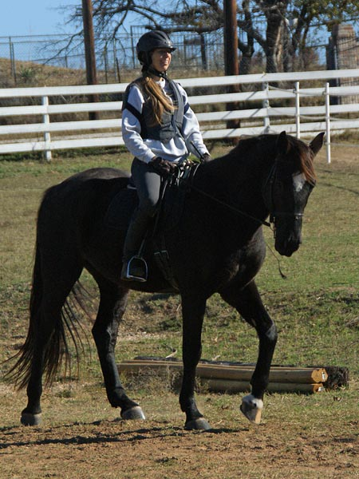

Dressage Lesson with Meg
Pictures from another lesson in daylight.
This was a pretty good ride. Some canter work, some leg yield
and some lengthening.
It's nice to see pictures of what we're doing. I forget how neat he looks.
He was in a good mood this ride.

Thinking about balancing myself over myself. Doesn't work
so well when we're going faster than a walk.
He started out with a nice, relaxed trot. A little forward and a little excited,
but not silly.
I've already forgot about my balance, but my right leg was listening better than
last ride.
If I fall over to the left, do you think he'll move that way. Way too much contorting
to try and get a leg yield. My trainer had us go back to the basics and break it
down. That helped a lot.
Even the bad-ish leg yielding helped get him more engaged behind and up in front.

Yep, I telegraph what we're going to do. Just wonder what kind of canter transition
we'll get if I flap my arms. I told my trainer I saw a picture right before we picked
up the canter, and she laughed and flapped her elbows. Can't I just sit still?
Yeehaw, this is what you get when you flap them into the canter. 'Subtle' needs to
join my vocabulary.
Still a very nice canter for him. I thought about sitting still and only squeezing
with my fingers and not bracing with my elbows. I think he appreciated that.
Seat in the saddle. Wearing the nice thermal breeches my mother made.
Trying, and basically succeeding at staying calm in the canter.
Now a stride before our right lead transition.
A much calmer transition without hollowing or bracing. He sure does respond to the
rider.
Calm, in the saddle and squeezing to ask him to stay soft.
Opps, those are the hands my trainer says need to stay down, and me losing steady
and calm when he broke to the trot from the canter. Hard to hold it all together.
But, a little more canter to remind him that I can stay calm and he can stay in
the canter.
Back to lateral work. Coming off the corner and trying to think through everything
we need to do before we do it.
Both of us calmer about starting the leg yield.
Nice to get a response without my looking like I'm a contortionist.
He has a work ethic and is usually wondering what is coming next. That being said,
he can get bored and try to make things up.
Not that pretty, but nicer than when I wasn't thinking.
He's already thinking of the lengthen.
I think his favorite thing to do right now.
Around the corner and just starting.
Him wanting to resist my hands and throw up his head as he starts to fling his feet
out.
Me asking him to stay soft and him with some resistance but also air time.

Then him softening and not fighting.
And him offering up his cobby lengthen.
And coming back to me after the diagonal with a nice working trot.
Darn, a step or two of canter when he lost his balance.
Turning up the center line.
Fun to see both front feet off the ground. He doesn't mind the effort.
And a halt. Something we still work on regularly. He does them so much better after
working off his back end. He's not like my draft crosses who will halt
at the whisper of a request.